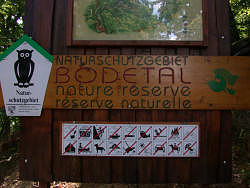
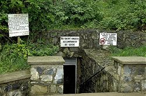

Cave Myths
Why taking pictures is forbidden...
 |
| Image: photo and video generally forbidden. |
In many caves taking pictures is forbidden. The explanation, that other cave visitors are annoyed by the flashlight is easy to understand. Another good reason is, that taking pictures takes time and tends to break up the group. And the flashlight disturbs bats, so in some countries it is forbidden by law, to take pictures of bats.
But the true reason, why taking pictures is forbidden, is typically called copyright infringement. The cave owner wants to make some bucks by selling the right to publish images of his cave. The owner basically thinks he owns the right on pictures of his cave. Unfortunately this is not true, as most countries have only two related laws, one on copyright, which regulates the use of the pictures for the photographer. Another which describes the rights and duties of the cave owner, which could be called "property rights". Both laws do not allow to restrict the use of pictures someone else makes. The only way to do this is to prohibit photography completely, using the property rights, then all legal pictures are made by him and are protected by copyright laws. This is lawyer logic, but this is the way it works!
Some cave owners think, they have to explain, why taking pictures is forbidden. But the copyright explanation could destroy their aura of being an altruistic protector of nature. So they invent really fantastic stories about cave destruction by flashlights.
Flashlights Make Plants Grow On The Speleothems
 |
| Image: Lots of rules for a simple cave visit. Is it necessary to become a lawyer first? |
I heard this argument several times! Sounds good, doesn't it? But think about it a bit more:
A seed of Audrey III, the killer tomato from space, astray in the cave,
sits on the most beautiful speleothems of the cave!
It ignores the electric light, burning at least 8 hours every day.
But one day, bad Jochen visits the cave, taking
pictures with his big flashlight.
Ultraviolett light hits the seed, it grows in some seconds, infests the
speleothems and then attacks some careless cave visitors....

Okay, that was a joke! But the scientific explanation is rather simple: of course, the flash is very bright and contains a lot of ultraviolet light. But the plants are not really able to use this energy, as the process of photosynthesis goes rather slow. The continuous light of the cave lights are the problem, even if the tour guide turns them on and off as the tour moves through the cave.
The Flashlight Disturbs the Bats
Sounds very good but is not really true! In some countries it is forbidden by law to take photographs of bats, because of exactly this reason. But although we appreciate any attempt to protect cave animals, we must confess that taking pictures with flashlight does not harm bats in any way. They just do not really like it, like we do not like it either.
Bats are not dependent on their eyes, they orientate mainly using sonar. So they do not see very good, and they are not blinded by the flashlight. They would be blinded by ultrasound. Actually the tiny noise the flash emits while it is charging is more annoying for the animals than the flash of light.
Still it is a matter of politeness to renounce using flashlights when entering cave parts with many bats. In other parts, the bats are obviously able to go to another part of the cave or just a narrow cleft around the corner, were they will not see anything of the human cave visitors.
Taking Pictures is Forbidden by the Mining Authority
|  |
| Image: Here is actually anything forbidden: to eat tuna from cans, kick flowers in the ass, even to drown in a lake. |
Often someone else is blamed, why photography is forbidden. In most countries there is an authority observing the safety of underground operations, like show mines and show caves. They make regulations, for the brightness of the light, the construction of paths or the existence of a secondary light system for emergencies.
I never heard of any authority which prohibits photography in caves or mines neither with or without flash. In most cases they would be astonished if you told them, or they would just grin.
Flashlight Blinds the Visitors for up to 15 Minutes
Some caves argue, the flashlight was much brighter in the darkness of the cave (which is true) and so the eyes are blinded and need some time to recover, probably up to 15 minutes (which is not true). But this was dangerous as people were not able to see the path during this time and so they might stumble and hurt themselves.
I must admit, flashlight into the eyes is not really fun, especially if the eyes had previously adapted to the dim cave and the pupil is opened wide. Still, it does no harm to the eye, and its only a second until the eye recovers. Otherways photographers all over the world would be sued for destroying their customers eyesight!
And it was pretty funny, that right after this explanation there was a spot
where the tour group was pictured (using flash) and the picture was sold at the
exit.
Actually the guide was not very happy when most of our group (mostly cavers)
started to run around with closed eyes and stretched out hands, crying "help me,
I am blind for 15 minutes...".
All above explanations are based on the flashlight. This is a tactical error of the cave owners, as this gives the cave visitor a very good argument, if he is able to take pictures without flash: if taking pictures is forbidden only because of the flash, taking pictures without flash is obviously allowed!
Fortunately there are digital cameras with high sensibility and the possibility
to adapt on artificial light....
The Use Of Cameras Seriously Damages Calcite Formations
|  |
|---|
| Image: The Entrance of Mitchelstown Cave. (235k) (© Mathias J. Duckeck) |
The strangest story about the dangers of show caves was once told at
 Mitchelstown Cave
in Ireland: "the use of cameras seriously damages calcite formations"!
Mitchelstown Cave
in Ireland: "the use of cameras seriously damages calcite formations"!
Taking pictures damages dripstones!
Now I know, not light, flashlight or dust from the visitors is the problem.
Every image you take, takes away some of the glittering glance of the
stalagmite.
Take the image of the stalagmite and take it home, captured in your Japanese
camera.
Bugs Bunny cartoons of reading away the text in newspapers come true!
We are lucky that there are so altruistic cave owners, doing their best to preserve the wonders of nature!
The new owner told me lately, he removed the above sign, so this image is a historic document now.
It is still forbidden to take pictures, but it is really admirably that he now tells the true reason: copyright infringement.
On one hand I appreciate this honesty very much, but on the other hand: the old explanation was much funnier!
Taking Pictures Breaks Up The Group
 |
| Image: and how about this: taking pictures is ALLOWED. |
The reason, that taking pictures takes time and tends to break up the group, is not so easy to understand, but also has some truth.
Photographs, standing somewhere, taking a picture, typically block the path. All following visitors have to wait until the picture is taken. The next explanation will start when all visitors arrived at the next stop, and the more visitor take pictures, the longer this will take.
Last but not least, people falling back to take picture may get lost or may destroy something while the guide is not there. So breaking up the group is actually not a good thing in show caves.
 The Ely Times - elynews.com :: News: Park to ban cameras on cave tours
The Ely Times - elynews.com :: News: Park to ban cameras on cave tours
{kind=link}
{kind=link}